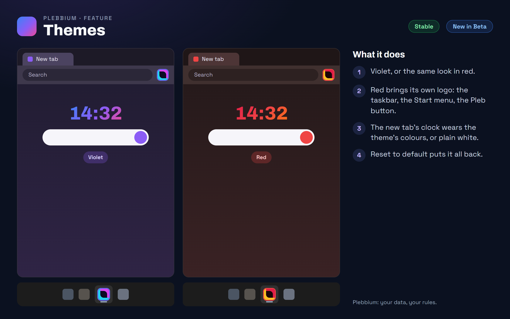

All features › Shipped › Themes
Themes
StableNew in Betasince 3612Plebbium's look in violet, or the same look in red with a red logo of its own: Pleb's pages, the browser's tabs and toolbar, and Plebbium's icon on the taskbar and in the Start menu all follow. Reset to default puts the theme and the new tab's background back as they came.

How to use it
- Plebbium settings › Appearance › Theme: Violet or Red.
- The colours and the logo change at once, taskbar and shortcuts too; Search with Plebbium follows from the next start.
- Appearance › White clock: the new tab's clock in plain white instead of the theme's colours.
- Appearance › Reset to default, or Customize on the new tab: back to Violet, matching the system, no picture. It asks first.
When it arrived
156.0.8078.361222 Oct 2026 · Beta and Stable
The red theme, beside violet.
156.0.8078.3614Beta 26 Oct 2026 · not on Stable yet
A red logo with the red theme, everywhere Plebbium shows its logo; the clock in the theme's colours on your picture, or White clock; Reset to default.
Why it works this way
One seed colour
The browser derives its colours from one seed, so changing it recolours the tabs, toolbar and menus together.
One logo per theme, both inside Plebbium
Switching downloads nothing, and Windows is shown a different icon rather than a changed one, so the taskbar and Start menu don't keep the old one.
Reset asks first
Your picture is kept only on your PC, so once removed it can't be brought back: Reset says what it changes before it does.
Colours that mean something stay
Green for on, red for danger and the like keep their colours in both themes.